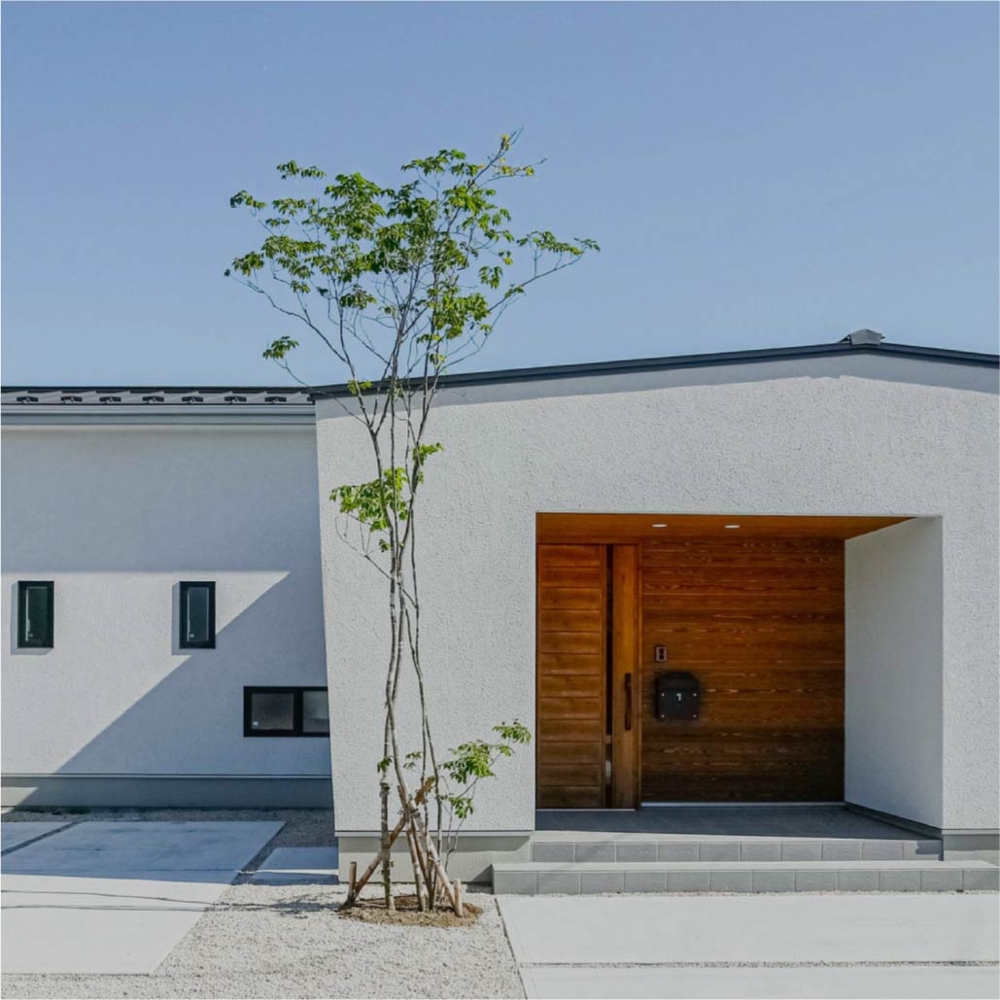
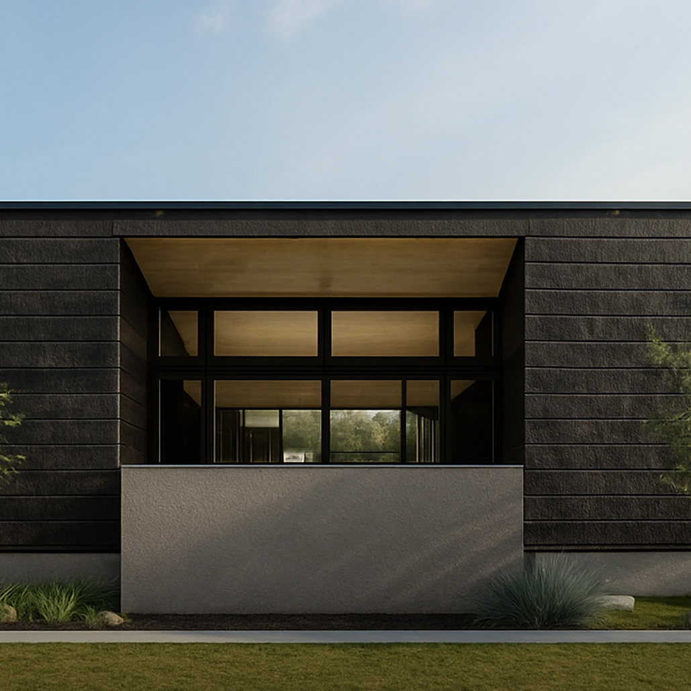
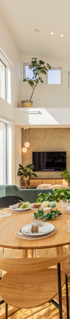
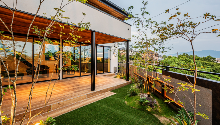
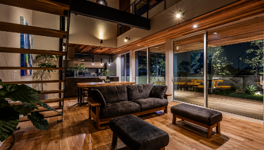
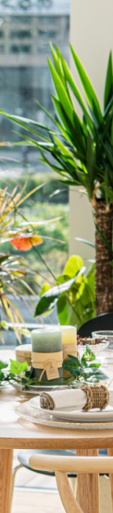
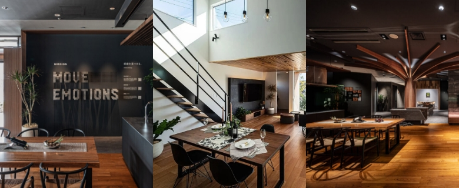

① 会社・基本データ（規模・エリア・対応工法）
WITHDOM建築設計（ウィズダム）は、2018年に福岡県古賀市で「ウィズホーム株式会社」として創業し、わずか6年で年間着工数8棟から約100棟規模に急成長した注文住宅ブランド。2022年にWITHDOM Group株式会社へ社名変更し、現本社は福岡市博多区博多駅東に構え全国展開を加速中。
社名の由来はWITH（共に）＋WISDOM（聡明さ）の造語。「Move emotions.（感動を動かす）」をミッションに掲げ、高性能×デザインの両立を追求する。
最大の特徴は「超」高性能住宅を標準仕様で提供する点。HEAT20 G2グレードの断熱性、全棟C値0.4以下保証、耐震等級3＋制震ダンパー、松尾式全館空調——これらが全てオプションではなく標準装備。さらに完全自由設計で、画一的なプランに縛られない。
| 項目 | 内容 |
|---|---|
| 会社名 | WITHDOM Group株式会社 |
| 創業 | 2018年8月13日（ウィズホーム株式会社として福岡県古賀市で設立） |
| 代表取締役 | 南郷 克英 |
| 本社（現） | 福岡市博多区博多駅東1丁目18-25 1F |
| 資本金 | 405,000千円（資本準備金含む／公式表記に準拠） |
| 売上高 | 約21億円（FY2022／住宅産業研究所調べ、2023年以降は公式非公表） |
| 従業員数 | 184名（グループ全体・2026年1月現在） |
| 年間着工棟数 | 98棟（2023年）／約100棟（2024年実績） |
| 対応エリア | 福岡・埼玉・千葉・岐阜・神奈川・静岡・愛知・鹿児島・広島・長野・茨城の11都道府県（グループ会社拠点ベース） |
| 取扱工法 | 木造軸組（在来）工法 |
| 主な認定 | 建設業許可（福岡県知事）/ 一級建築士事務所登録 |
急成長の実績
- 2019〜2025年の直近6年成長率1,768%（東京商工リサーチ「木造建築工事業 売上高成長率ランキング」全国1位）
- 2020〜2022年の3ヵ年売上成長率159.3%で全国1位（住宅産業研究所「TACTホームビルダー経営白書」2023年版／2年連続全国No.1）
- 公式中期目標: 2029年7月期に完工棟数1,000棟／売上300億円
- 2034年に全国47都道府県にグループ会社設立を目標
代表者の経歴
南郷克英社長は鹿児島市出身。実家が工務店で、大手ハウスメーカーで13年間営業、住宅経営コンサルタント会社で2年、注文住宅会社で6年の店長経験を積み、45歳で起業。「お客様が心から喜んでいただける感動を発見し共有できる会社を創りたい」という使命で創業した。
グループ会社・ブランド
- WITHDOM建築設計: 注文住宅の主力ブランド（フルオーダー）
- TARIL（タリル）: 2025年10月始動の小さな平屋ブランド。約18坪・1,980万円〜
- comfass（コンファス）: 規格住宅ブランド（2022年6月始動）
- 各地域子会社: WITHDOM Saitama / Chiba / Gifu / Kanagawa / Shizuoka / Aichi / Kagoshima / Hiroshima / Nagano / Ibaraki


顧客満足度・受賞
| 指標 | 数値 |
|---|---|
| お引き渡し時アンケート平均 | 4.7 / 5.0点 |
| YouTube「ウィズダムの失敗しない家づくりTV」登録者 | 4万人超 |
| Instagram @withdom_architect フォロワー | 1.7万人 |
| オリコン顧客満足度ランキング | 未掲載（対象規模に達していないと推測） |
情報の限界について：WITHDOMは2018年創業の急成長企業のため、大手HM（積水ハウス・住友林業等）と比較すると公開情報が限られている。本記事は2026年4月時点のWebリサーチに基づくが、最新情報は公式サイトまたは各スタジオへ直接確認を推奨する。
② 商品ラインナップと価格
WITHDOMは商品名を明確に分けず、基本的に完全自由設計（フルオーダー）で1棟ずつ設計するスタイル。大手HMのような「○○シリーズ」という商品体系は持たない。ただし2025年以降、規格住宅・小型平屋ブランドを追加し、幅を広げている。
注文住宅（フルオーダー）
| 項目 | 内容 |
|---|---|
| 坪単価目安 | 約85〜109万円（2026年時点） |
| 平均単価 | 約3,000万円（30坪・本体工事費） |
| 設計スタイル | 完全自由設計・一級建築士が担当 |
| 得意なデザイン | モダン・スタイリッシュ・平屋 |
| 標準仕様 | HEAT20 G2断熱 / C値0.4以下 / 耐震等級3 / 制震ダンパー / 松尾式全館空調 / トリプルガラス樹脂サッシ / 第一種熱交換換気 |
| 住設メーカー | 自由選択可（ショールーム同行対応あり） |
TARIL（タリル）— 小さな平屋ブランド（2025年〜）
| 項目 | 内容 |
|---|---|
| コンセプト | 「満ち足りる、小さな平屋」 |
| 坪数 | 約18坪（延床面積58.79㎡／TARIL公式の単一仕様） |
| 価格 | 1,980万円（税別）／ 2,178万円（税込） |
| 特徴 | セミオーダー式。50坪の土地で平屋＋庭が実現 |
| 対象 | コンパクトな暮らし志向の方 |
comfass（コンファス）— 規格住宅ブランド（2022年〜）
WITHDOMグループの規格住宅ブランド。詳細な坪単価は非公表。
坪単価の推移
| 時期 | 坪単価目安 | 備考 |
|---|---|---|
| 2021年頃（ウィズホーム時代） | 68〜89万円 | 旧ブランド名時代 |
| 2024年 | 80〜100万円 | 資材・人件費高騰 |
| 2026年 | 85〜109万円 | 全国展開でブランド価値上昇 |
坪数別の建築総額シミュレーション
※本体工事費×1.43（付帯工事20%＋諸費用10%＋外構13%）で総額概算。金利0.5%・35年ローン・頭金なし。
| 坪数 | 本体工事費 | 建築総額（目安） | 月々返済額 |
|---|---|---|---|
| 25坪 | 約2,375万円 | 約3,400万円 | 約88,200円 |
| 30坪 | 約2,850万円 | 約4,080万円 | 約105,900円 |
| 35坪 | 約3,325万円 | 約4,750万円 | 約123,300円 |
| 40坪 | 約3,800万円 | 約5,430万円 | 約141,000円 |
※坪単価95万円で概算。土地代別。実際の見積もりは仕様・地域で変動。
価格に関する注意点
- WITHDOMは値引き不可。「すべてのお客様を平等に」という方針で定価販売
- 紹介制度あり: 値引きではなく「優秀な営業担当のアサイン」が特典
- 住設メーカーは自由選択可能なため、グレードにより価格差が大きい
③ 構造・耐震性能
木造軸組工法＋許容応力度計算＋制震ダンパー
WITHDOMは一般的な在来軸組工法をベースに、構造計算と制震装置で耐震性能を高めるアプローチを取る。特殊な独自構法ではなく「オーソドックスな工法を確実に設計・施工する」思想。
| 項目 | 内容 |
|---|---|
| 工法 | 木造軸組（在来）工法 |
| 耐震等級 | 全棟 耐震等級3（最高等級） |
| 構造計算 | 許容応力度計算（最も安全度の高い方法）を全棟実施 |
| 認定 | 第三者機関による認定取得 |
| 制震装置 | 住友ゴム「MAMORY（マモリー）」を全棟標準搭載 |
| 基礎 | ベタ基礎 |
許容応力度計算とは
住宅の構造計算には3つのレベルがある。
| レベル | 名称 | 精度 | WITHDOMの対応 |
|---|---|---|---|
| 1 | 壁量計算 | 簡易（木造2階建ては法律上これだけでOK） | — |
| 2 | 品確法ルート | 中程度 | — |
| 3 | 許容応力度計算 | 最高精度（柱・梁1本ずつの安全性を検証） | 全棟実施 |
許容応力度計算は大手HMでも必ずしも全棟実施しているわけではない。WITHDOMが全棟でこれを行い、第三者機関の認定を取得している点は信頼性が高い。
制震ダンパー MAMORY（マモリー）
住友ゴム工業が開発した木造住宅用制震ダンパー。自動車のブレーキと同じ原理で、特殊高減衰ゴムが地震エネルギーを熱に変換して吸収する。
| 項目 | 内容 |
|---|---|
| メーカー | 住友ゴム工業（ダンロップ等のゴムメーカー） |
| 認定 | 国土交通大臣認定 |
| 揺れ低減効果 | 最大約70%の揺れ低減 |
| 耐久性 | 60年経過後も性能維持（メンテナンスフリー） |
| 採用実績 | 熊本城天守閣、京都・東本願寺御影堂門などの歴史的建造物にも同技術を採用 |
多くのHM・工務店では制震ダンパーはオプション扱いだが、WITHDOMは全棟標準搭載。耐震等級3＋制震ダンパーの「耐震×制震」ダブル対策が標準という点は大きなアドバンテージ。

④ 断熱性能

HEAT20 G2グレード — 北海道基準を超える標準仕様
| 項目 | 内容 |
|---|---|
| 断熱グレード | HEAT20 G2グレード相当（全棟標準） |
| UA値 | 0.46 W/m²K以下（全棟対応） |
| 断熱等級 | 等級6相当 |
| 断熱材 | 発泡ウレタンフォーム吹き付け |
| 窓 | トリプルガラス＋樹脂サッシ＋アルゴンガス封入（標準） |
| 換気 | 第一種熱交換型換気システム（標準） |
断熱材の特徴
吹付断熱（発泡ウレタンフォーム）を採用。液状の材料を吹き付けて発泡・硬化させるため、柱や梁の隙間にも密着し、断熱と気密を同時に確保する。
- シックハウスの原因となる素材ゼロ
- 壁内結露の抑制効果あり
- グラスウールと比較して施工ムラが出にくい
窓の仕様
| 項目 | スペック |
|---|---|
| ガラス | トリプルガラス（3層） |
| サッシ | オール樹脂サッシ |
| 封入ガス | アルゴンガス |
| 効果 | 冷暖房効率を飛躍的に向上し結露を大幅防止 |
大手HMの標準仕様がペアガラス＋アルミ樹脂複合サッシであることが多い中、WITHDOMはトリプルガラス＋オール樹脂が標準。この窓仕様だけで他社では数十万円のオプションに相当する。
他社との断熱性能比較
| ハウスメーカー | UA値（代表値） | 断熱等級 |
|---|---|---|
| 一条工務店（i-smart） | 0.25 | 等級7 |
| スウェーデンハウス | 0.38 | 等級6 |
| 三井ホーム | 0.43 | 等級5〜6 |
| WITHDOM建築設計 | 0.46 | 等級6相当 |
| 住友林業 | 0.46 | 等級5 |
| 積水ハウス（木造） | 0.46〜0.60 | 等級5 |
| ヘーベルハウス（鉄骨） | 0.55〜0.60 | 等級5 |
WITHDOMのUA値0.46は業界上位に位置する。一条工務店のような断熱特化型には及ばないが、大手HMの標準仕様を上回る水準を「標準」で提供している点が強み。
⑤ 気密性能
C値0.4以下を全棟保証
| 項目 | 内容 |
|---|---|
| C値基準 | 0.4 cm²/m²以下（全棟保証） |
| 測定 | 全棟気密測定を実施 |
| 断熱材 | 発泡ウレタンフォーム吹き付け（隙間を完全に充填） |
他社との気密性能比較
| ハウスメーカー | C値（公表データ） | 全棟測定 |
|---|---|---|
| WITHDOM建築設計 | 0.4以下（保証） | 全棟実施 |
| 一条工務店 | 0.59（全棟平均） | 全棟実施 |
| 桧家住宅 | 0.31（全棟平均） | 全棟実施 |
| 住友林業 | 非公表 | 希望者のみ |
| 積水ハウス | 非公表 | 実施せず |
| ヘーベルハウス | 非公表 | 実施せず |
注目ポイント: C値を全棟測定・保証しているHMは少数派。WITHDOMのC値0.4以下保証は、一条工務店のC値0.59保証よりも厳しい基準。大手HMの多くはC値を公表すらしていないため、WITHDOMの気密性能への自信がうかがえる。
⑥ 換気・空調
松尾式全館空調システム — エアコン2台で家全体を快適に
WITHDOMの空調の最大の特徴は、温熱環境の第一人者・松尾和也氏（松尾設計室）監修の全館空調システムを標準採用している点。
| 項目 | 内容 |
|---|---|
| 監修 | 松尾設計室 松尾和也氏 |
| エアコン台数 | 家庭用エアコン2台（小屋裏1台＋床下1台） |
| 冬の仕組み | 床下エアコン1台で全館暖房。各居室へ暖かい空気を送り届ける |
| 夏の仕組み | 小屋裏エアコン1台で全館冷房 |
| 換気システム | 第一種熱交換型換気システム（標準） |
| メリット | 将来のメンテナンス費用が安い（家庭用エアコンなので交換・修理が容易） |
松尾式のメリット
- 低ランニングコスト: 家庭用エアコン2台だけで全館冷暖房。電気代が安い
- メンテナンスが簡単: 専用機器ではなく一般のエアコンなので、故障時も街の電器屋で対応可能
- 税制優遇: 高性能住宅としての各種優遇
- ヒートショック防止: 家全体の温度を均一に保ち、冬の温度差を最小化
パッシブ設計
WITHDOMはパッシブ設計を標準で取り入れている。太陽光・風などの自然エネルギーを最大限活用し、機械に頼りすぎない快適性を追求。
- 日射シミュレーション: 季節・時間ごとの太陽の動きを分析
- 夏: 軒の出・庇で日差しを遮り、室温上昇を抑制
- 冬: 南面の大きな窓から太陽熱を室内に取り込み、暖房負荷を低減
第一種熱交換型換気システム
外気をそのまま取り入れるのではなく、室内の温度に近づけた上で換気する仕組み。冷暖房で調整した室温を無駄にせず、光熱費の削減につながる。
⑦ デザイン
完全自由設計 × モダンデザインが得意
WITHDOMのデザイン哲学は「高性能とデザインの両立」。大手HMのような規格プランに縛られず、一級建築士が1棟ずつゼロから設計する完全フルオーダー制。
デザインの特徴
- 得意スタイル: モダン・スタイリッシュ・シンプルモダン
- 平屋に定評: 平屋のデザイン提案力が高く、施主からの評価が特に高い
- 住設メーカー自由選択: キッチン・バス・洗面など、メーカーを自由に選べる（ショールーム同行対応あり）
- 大手HMからの人材: 有力ハウスメーカーから設計士・営業を積極スカウトし、設計提案力を強化
施工事例
- 平屋（28〜34坪）: 開放的なLDK＋ウッドデッキ
- 2階建て（35〜50坪）: 吹き抜け＋大開口の明るい空間
- 半平屋: 1階をメインに2階はロフト的に使う折衷案
- コの字型平屋: 中庭を囲むプライベート空間


モデルハウス・スタジオ
WITHDOMは「スタジオ」と呼ぶ実寸大のモデルハウスを全国に展開。宿泊体験が可能なスタジオもあり、実際の住み心地を体感してから検討できる。

⑧ 保証・メンテナンス
保証体系
| 項目 | 期間 | 内容 |
|---|---|---|
| 住宅瑕疵保証 | 10年（法定最低ライン） | 構造耐力上主要な部分・雨水侵入防止部分を無償補修 |
| 地盤保証 | 二次情報で10年／20年表記が混在 | 不同沈下など地盤起因のトラブルに対応 |
| 長期保証（延長） | 最長60年 を称する二次情報あり | 10年点検後に有償工事を実施→10年延長。繰り返しで延長 |
| 建物長期保証システム | 11年目〜最長100年 | 一般社団法人長寿命住宅普及協会「ベストバリューホーム」に加盟 |
定期点検スケジュール
引渡し後の無料点検タイミングは二次情報で「1年・3年・5年・10年」と「6ヶ月・1年・2年・5年・10年」の2系統が混在。10年目以降は有償点検＋必要な耐久工事を実施することで保証延長。
他社との保証比較
| ハウスメーカー | 初期保証 | 最大延長 |
|---|---|---|
| 積水ハウス | 30年 | 永年 |
| 住友林業 | 30年 | 60年 |
| ヘーベルハウス | 30年 | 60年 |
| 一条工務店 | 30年 | 30年 |
| WITHDOM建築設計 | 10年 | 60年（有償延長） |
| タマホーム | 10年 | 60年 |
正直な評価: 初期保証10年は住宅瑕疵担保責任の法定最低ライン。大手HMの30年初期保証と比較すると見劣りする。ただし「ベストバリューホーム」加盟による最長100年の建物長期保証システムでカバーしている。創業8年の企業としては妥当だが、長期保証を重視する方は契約前に詳細を確認すべき。
⑨ 建築期間
各フェーズの期間
| フェーズ | 期間目安 |
|---|---|
| 初回来場〜契約 | 1〜3ヶ月 |
| 契約〜プラン確定 | 2ヶ月（回数無制限） |
| プラン確定〜仕様確定 | 2ヶ月（回数無制限） |
| 着工〜引渡し | 4〜6ヶ月（推定） |
| 合計（初回来場〜引渡し） | 約9〜13ヶ月 |
打ち合わせの特徴
- プラン確定まで2ヶ月、仕様確定まで2ヶ月の期間設定
- 期間内であれば打ち合わせ回数に上限なし
- ただし設定期間内に完了させる必要がある
- 完全自由設計のため、規格住宅より時間がかかる傾向
⑩ 客層・向き不向き
典型的な施主プロファイル
| 属性 | 傾向 |
|---|---|
| 年齢 | 30代が中心（一次取得者がメインターゲット） |
| 価値観 | 性能×デザインの両立を求める層 |
| 情報収集 | YouTube・Instagramで高性能住宅を研究してからスタジオ来場 |
| 予算感 | 建築総額3,500〜5,000万円（土地別） |
| デザイン志向 | モダン・スタイリッシュ・平屋に興味がある |
向いている人
- 断熱・気密・耐震を高水準で求めつつ、デザインも妥協したくない
- 平屋や開放的な間取りにこだわりたい
- 完全自由設計でゼロから家を作りたい
- 住設メーカー（キッチン・バスなど）を自由に選びたい
- 大手HMの画一的なプランに魅力を感じない
向いていない人
- 坪単価60万円台以下で建てたい（→タマホーム・HUGme）
- 知名度・ブランド力を最重視する（→積水ハウス・住友林業）
- 初期保証30年以上を絶対条件とする（→積水ハウス・ヘーベルハウス）
- 全国どこでも対応してほしい（→一条工務店・積水ハウス）
- 和風・クラシックなデザインを好む（→住友林業・スウェーデンハウス）
⑪ 他社との比較表
| 項目 | WITHDOM | 一条工務店 | 住友林業 | アイ工務店 | 桧家住宅 | 積水ハウス |
|---|---|---|---|---|---|---|
| 坪単価目安 | 85〜109万 | 80〜105万 | 80〜130万 | 65〜85万 | 50〜70万 | 85〜120万 |
| UA値 | 0.46 | 0.25 | 0.46 | 0.4〜0.5 | 0.5〜0.6 | 0.46〜0.60 |
| C値 | 0.4以下保証 | 0.59以下 | 非公表 | 非公表 | 0.31平均 | 非公表 |
| 構造 | 木造軸組 | 木造2×6 | 木造BF | 木造軸組 | ハイブリッド | 鉄骨/木造 |
| 制震ダンパー | 標準 | オプション | オプション | オプション | なし | オプション |
| 全館空調 | 標準 | オプション | オプション | オプション | 標準 | オプション |
| 設計自由度 | ◎ | △ | ◎ | ○ | ○ | ◎ |
| 初期保証 | 10年 | 30年 | 30年 | 20年 | 30年 | 30年 |
| 向く人 | 性能×デザイン | 断熱最優先 | 木×高級感 | 自由設計×性能 | 全館空調×コスパ | ブランド×安心 |
WITHDOM vs 一条工務店
| 比較軸 | WITHDOM | 一条工務店 |
|---|---|---|
| 断熱性能 | ○（UA値0.46・G2） | ◎（UA値0.25・業界No.1） |
| 気密性能 | ◎（C値0.4以下保証） | ○（C値0.59保証） |
| デザイン自由度 | ◎（完全自由設計） | △（一条ルールで制約多い） |
| 全館空調 | ◎（松尾式・標準） | ○（床暖房標準・さらぽかOP） |
| 制震ダンパー | ◎（標準） | △（オプション） |
| 保証 | △（初期10年） | ○（初期30年） |
| 向く人 | 性能もデザインも妥協しない | 断熱・気密の数値を最優先 |
WITHDOM vs アイ工務店
| 比較軸 | WITHDOM | アイ工務店 |
|---|---|---|
| 坪単価 | 高め（85〜109万） | 安め（65〜85万） |
| C値保証 | ◎（0.4以下保証） | △（保証なし） |
| 全館空調 | ◎（標準） | △（オプション） |
| 制震ダンパー | ◎（標準） | △（オプション） |
| エリア | 11都道府県 | 全国 |
| 向く人 | 標準で高性能フル装備 | コスパ×自由設計 |
⑫ よくある後悔・失敗事例
後悔①: 担当者の対応にムラがある
- 急成長に伴い全国展開を加速中のため、拠点によって人材の質に差がある
- 「設計案が出るまでが長い」「連絡が来ないまま時間が過ぎた」という声
- 担当者の退職による引き継ぎ漏れの報告もある
対策: 紹介制度を利用して優秀な担当者をアサインしてもらう。合わない場合は担当変更を依頼可能。
後悔②: 坪単価が思ったより高い
- ウィズホーム時代（68〜89万円）のイメージで来場したら、現在は85〜109万円に上昇
- 完全自由設計×高性能標準仕様のため、ローコスト帯ではない
- 住設メーカーを自由に選べる反面、グレードを上げると費用が膨らむ
対策: 事前に予算の上限を伝え、その範囲内での提案を依頼する。
後悔③: 全館空調の匂い問題
- 家中の空気を循環させる設計のため、キッチンの匂いや生活臭が他の部屋に回りやすい
- 設計段階での換気計画が重要
対策: 設計時にキッチン換気の経路を入念に確認。レンジフードの性能にも注意。
後悔④: 施工エリアの制限
- 対応エリアは拡大中だが、まだ全国対応ではない（2026年4月時点で11都道府県）
- 対応エリア内でも市区町村によっては建築不可のケースあり
対策: 事前にWebサイトまたは電話で施工可能エリアを確認。
後悔⑤: 会社の歴史が浅い
- 創業2018年。大手HM（積水ハウス1960年、住友林業1948年）と比較すると圧倒的に若い
- 「30年後・50年後のアフターサービスは大丈夫か」という不安
- 急成長に伴い体制整備が追いついていない兆候もある
対策: 「ベストバリューホーム」加盟による第三者保証を確認。長期保証の詳細条件を契約前に書面で確認。
後悔⑥: 情報が少なく比較しにくい
- 大手HMと比べて施主ブログ・口コミ・比較記事が少ない
- 坪単価も公式には非公表で、事前の予算計画が立てにくい
対策: スタジオ来場時に過去の施工事例と概算見積もりを複数パターン依頼する。
⑬ まとめ
- 高性能が全て標準仕様: HEAT20 G2断熱・C値0.4以下保証・耐震等級3・制震ダンパー・松尾式全館空調・トリプルガラス樹脂サッシ——他社ではオプション数百万円相当が全てコミコミ
- C値0.4以下を全棟保証: 一条工務店（0.59保証）をも上回る厳しい気密基準
- 完全自由設計: 一級建築士による一棟一棟のフルオーダー設計。平屋に特に強い
- 制震ダンパー標準: MAMORY標準搭載は同価格帯で希少
- 住設メーカー自由選択: キッチン・バスなどのメーカー縛りがない
- 急成長の勢い: 6年で成長率1,768%。勢いのある企業で提案力も高い
- 初期保証10年: 大手HMの30年保証と比較すると短い
- 創業8年: 企業の歴史が浅く、長期的な安心感は大手に劣る
- 担当者の質にムラ: 急成長に伴う人材育成の課題
- 施工エリア限定: 全国対応ではない（11都道府県）
- 情報が少ない: 公開データ・施主ブログが少なく比較検討しにくい
- 坪単価が上昇傾向: ウィズホーム時代の割安感は薄れつつある
こんな人に強くお勧め
「性能もデザインも妥協したくない。大手HMの画一的なプランではなく、自分だけの高性能住宅をゼロから設計したい」という人にとって、WITHDOMは最有力候補のひとつ。特に平屋＋高性能＋モダンデザインを求める30代の方には刺さる。